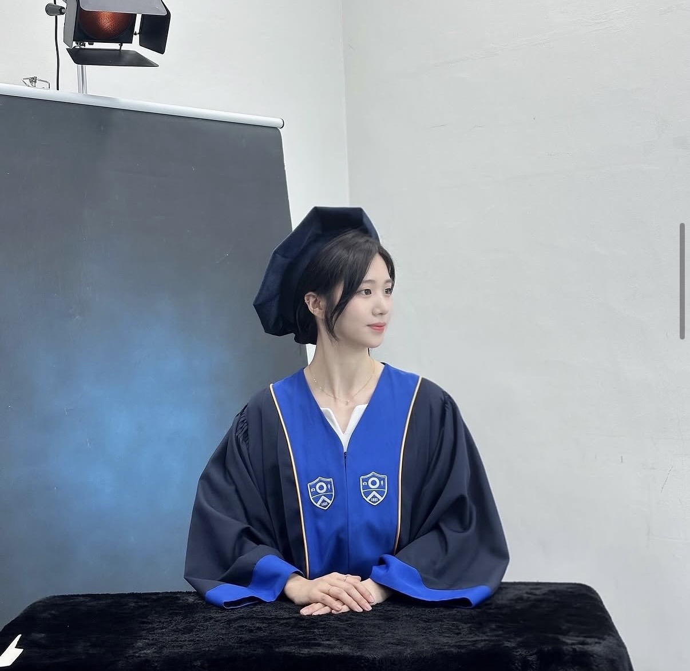

I am an M.S. student in Artificial Intelligence at KAIST AI, advised by Prof. Chulhee Yun.
My recent research focuses on optimization, loss landscapes, and their connections to stable training dynamics.
Previously, I received my B.S. in Computer Science from Yonsei University with a double major in Mathematics, and worked on 3D world models, RGB-SLAM, and 3D video generation through research internships at KAIST AI, Yonsei AI, and Purdue University.
Email:
jueunkim@kaist.ac.kr
Github |
CV
|
|

|
| Yonsei University |
Purdue University |
KAIST AI |
B.S. in CS, Math
2021-2026 |
Visiting Scholar
2023-2024 |
M.S. in AI
2026- |
| June 2026 |
AMUSE was accepted to HiLD 2026. |
| May 2026 |
AMUSE: Anytime Muon with Stable Gradient Evaluation was published on arXiv. |
AMUSE: Anytime Muon with Stable Gradient Evaluation
Jueun Kim, Baekrok Shin, Jihun Yun, Beomhan Baek, Minhak Song, Chulhee Yun
HiLD at ICML, 2026
We propose AMUSE, a schedule-free Muon optimizer that stabilizes training by gradually shifting gradient evaluation from the fast Muon sequence to a stable averaged sequence, while retaining Muon's rapid progress along flat loss-landscape directions.
arXiv |
bibtex
@inproceedings{kim2026amuse,
title={AMUSE: Anytime Muon with Stable Gradient Evaluation},
author={Kim, Jueun and Shin, Baekrok and Yun, Jihun and Baek, Beomhan and Song, Minhak and Yun, Chulhee},
booktitle={High-dimensional Learning Dynamics Workshop at ICML},
year={2026}
} |
|
|
RGB-SLAM with Depth Estimation
Jueun Kim
Research Project, Purdue University, 2023-2024
Worked on dense visual SLAM and modified the RGB-D model architecture into RGB visual SLAM, removing the requirement for depth data.
|
|
|
Meetable
Jueun Kim
Frontend Project, 2023-2024
Developed a website for making appointments among many people and managing a personal calendar.
Project Page
|
|